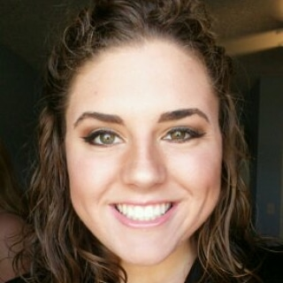

From a young age, Abrielle was always interested in music and lights. After having many dance parties with her parents and younger sister, she became a tap dancer but quickly transitioned to an Irish dancer. As she grew older, she picked up other hobbies, including playing guitar and piano. Sonme of her most fond memories were performing for her friends and family. During the holidays, she wouold travel to her grandparents' houses, passing through cities with lit up buildings and bridges at night. One of her most fond memories was watching a Chirstmas light show.
In 2017, Abrielle graduated from Portland Saint Patrick Catholic School and moved to East Lansing to attend higher education at Michigan State Universzity. There, she continued her passion for dance by participating in Zumba classes. As she was deciding on a major, she chose to pursue a Bachelor's in Human-Centered Technology with minors in Entrepreneurship and Graphic Design. She quickly realized she fit in nicely with the User Experience community and focused on building a strong resume for future employers. Some of her past work is listed below:
Currently Abrielle is working on deisnging, building, and programming a physical wall of LED lights. The goal is to use music to create a visual experience for the user. Seeing music come alive through the use of 900 lights to display patterns, rhythms, and beats. The LED light wall could be used for DJs, modern art museums, children's hospitals, or for home entertainment. Abrielle is using this project to show her ability to create an experience in the physical space.